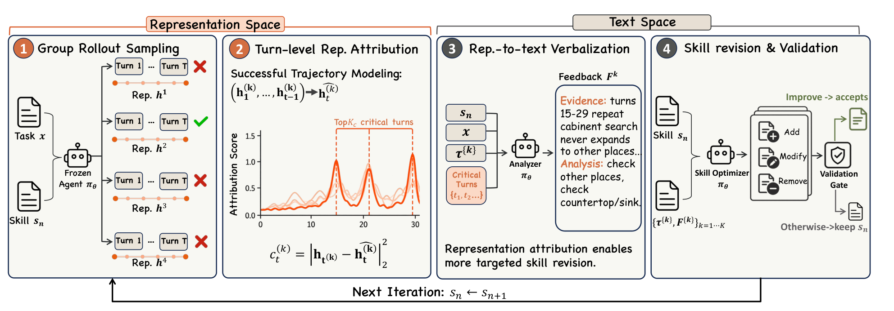

Rep2Skill: Representation-Guided Skill Self-Evolution for LLM Agents
arXiv preprint arXiv:2609.39149, 2026
Moves skill evolution beyond the text space by using the agent's internal representations to guide how reusable textual skills are diagnosed and revised.